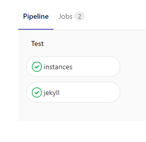
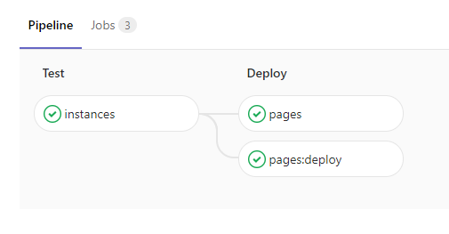
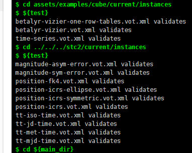
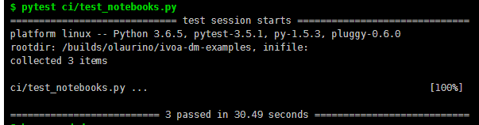

Ongoing Interoperable Implementations
Omar Laurino, Gerard Lemson,
Tom Donaldson
May 28 2018
By hand/XML editor
with a UML tool + translation scripts
with a Domain Specific Language
model("source") {
include("ivoa", version: "1.0")
dataType("Position") {
attribute(name: "ra", dataType: "ivoa:real")
attribute(name: "dec", dataType: "ivoa:real")
}
objectType("Source") {
attribute(name: "name", dataType: "ivoa:real")
attribute(name: "position", dataType: "source:Position")
}
}By hand/XML editor
With a UML tool + translation scripts
With a Domain Specific Language
Gerard's Mapping Tool (point 'n click!)
def modelLocation = "file:example.vodml.xml"
def ivoaModelLocation = "https://volute.g-vo.org/svn/trunk/projects/dm/vo-dml/models/ivoa/vo-dml/IVOA-v1.0.vo-dml.xml"
dmInstance {
model(vodmlURL: modelLocation)
model(vodmlURL: ivoaModelLocation)
instance(type: "source:Source") {
instance(role: "name", value: "A Source")
instance(role: "position") {
instance(role: "ra", value: 122.02)
instance(role: "dec", value: -12.44)
}
}
}Parses almost all the single-table patterns
@VO('source:Position')
class Position(BaseType):
ra = Attribute('source:Position.ra', min_occurs=1, max_occurs=1)
dec = Attribute('source:Position.dec', min_occurs=1, max_occurs=1)
@VO('source:Source')
class Source(BaseType):
name = Attribute('source:Source.name', min_occurs=1, max_occurs=1)
position = Attribute('source:Source.position', min_occurs=1, max_occurs=1)HSC catalog has columns referring to photometry filters.
| ID | ... | Instrument | Filter |
|---|---|---|---|
| 247770718 | ... | WFPC2 | F814W |
| 255488227 | ... | ACS | F606W |
Astropy is used to parse <TABLE>
Data is represented as Astropy quantities/columns when possible
Adapters can be provided to decorate VODML objects
from astropy.coordinates import SkyCoord
from rama.models.coordinates import EquatorialCoord
simple_position_file = read("file.vot.xml")
position = simple_position_file.find_instances(StdPosition)[0]
assert isinstance(position.coord, SkyCoord)
assert isinstance(position.coord.__vo_object__, EquatorialCoord)feedback:
FIELDs become PARAMs and vice-versaLITERAL and only use CONSTANT/COLUMN?You can only start by mapping VODML concepts (roles, types) to VOTable concepts (tables, columns, params)
<INSTANCE ID="_source" dmtype="source:Detection">
<COMPOSITION dmrole="source:Source.position">
<INSTANCE dmtype="source:SourcePosition">
<ATTRIBUTE dmrole="meas:CoordMeasure.coord">
<INSTANCE dmtype="coords:domain.space.EquatorialCoord">
<ATTRIBUTE dmrole="coords:domain.space.EquatorialCoord.ra">
<COLUMN ref="SourceRA" dmtype="ivoa:real"/>
</ATTRIBUTE>
<ATTRIBUTE dmrole="coords:domain.space.EquatorialCoord.dec">
<COLUMN ref="SourceDec" dmtype="ivoa:real"/>
</ATTRIBUTE>
<REFERENCE dmrole="coords:Coordinate.frame">
<IDREF>_icrs_</IDREF>
</REFERENCE>
<ATTRIBUTE dmrole="omar:Made.this.up">
<CONSTANT ref="_SOME_PARAM" dmtype="ïvoa:real"/>
</ATTRIBUTE>
<ATTRIBUTE dmrole="omar:Something.different">
<LITERAL value="42" dmtype="ïvoa:real"/>
</ATTRIBUTE>
</INSTANCE>
</ATTRIBUTE>
</INSTANCE>
</COMPOSITION>
</INSTANCE><INSTANCE ID="_source" dmtype="source:Detection">
<ROLE dmrole="position">
<INSTANCE dmtype="source:SourcePosition">
<ROLE dmrole="coord">
<INSTANCE dmtype="coords:domain.space.EquatorialCoord">
<ROLE dmrole="ra">
<INSTANCE ref="SourceRA" dmtype="ivoa:real"/>
</ROLE>
<ROLE dmrole="dec">
<INSTANCE ref="SourceDec" dmtype="ivoa:real"/>
</ROLE>
<ROLE dmrole="frame">
<IDREF>_icrs_</IDREF>
</ROLE>
<ROLE dmrole="up">
<INSTANCE ref="_SOME_PARAM" dmtype="ïvoa:real"/>
</ROLE>
<ROLE dmrole="different">
<INSTANCE value="42" dmtype="ïvoa:real"/>
</ROLE>
</INSTANCE>
</ROLE>
</INSTANCE>
</ROLE>
</INSTANCE>model driven
annotation driven/dynamic
COMPOSITON, REFERENCE, ATTRIBUTE with ROLECONSTANT and COLUMN is a mess (compelling use case?) 
 
Understanding XML: The Human’s Guide to Machine-Readable Data